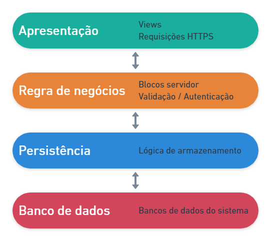

O projeto utiliza o MVC (Model-View-Controller) como arquitetura principal. O MVC é um padrão de projeto muito utilizados em sistemas web e foca na reusabilidade de código. Por utilizar o módulo Spring Boot do Spring Framework, são divididos em 4 camadas, como veremos a seguir.
O projeto é dividido em 4 camadas distintas que se comunicam entre si na seguinte ordem: apresentação (presentation), regra de negócios (business), persistência (persistence) e banco de dados (database). A seguir veremos a definição de cada camada (Figura 1).

Figura 1 - Divisão das camadas
A primeira camada é responsável por fazer a comunicação entre o usuário e o sistema por meio de uma interface ou front-end. Ela trata diretamente as requisições HTTPS incluindo a primeira etapa da autenticação, e repassa para a camada seguinte, regra de negócios.
Em nosso projeto essa camada está localizada nas pastas mobile (localização: Formulários/mobile/ ) e web (localização: Formulários/web/ ) e o tratamento das requisições HTTPS é feito de forma low-code a partir Fonte de dados.
Aqui encontra-se toda a lógica de negócio do sistema, responsável por fazer validações (ex.: o CPF informado pelo usuário é válido?), Autorização (ex.: o usuário e senha informado pelo usuário está correto?) e ser um meio termo entre as camadas de apresentação e persistência.
No Cronapp, essa camada é feita a partir dos blocos de programação Servidor (localização: Bloco de programação/Servidor ) que converte seu conteúdo em classes Java.
Contém as estruturas de classes do sistema e a lógica de armazenamento que permite fazer a comunicação entre a camada de regra de negócio e o banco de dados.
Por padrão, essa camada encontra-se no diretório app (Endereço: src/main/java/app), porém novas camadas de persistências podem ser criadas a partir do Diagrama de dados.
A última camada é a de banco de dados, onde todos os dados gerados pelo sistema serão armazenados. No Cronapp, a comunicação com o banco de dados é feita a partir da funcionalidade Banco de dados.